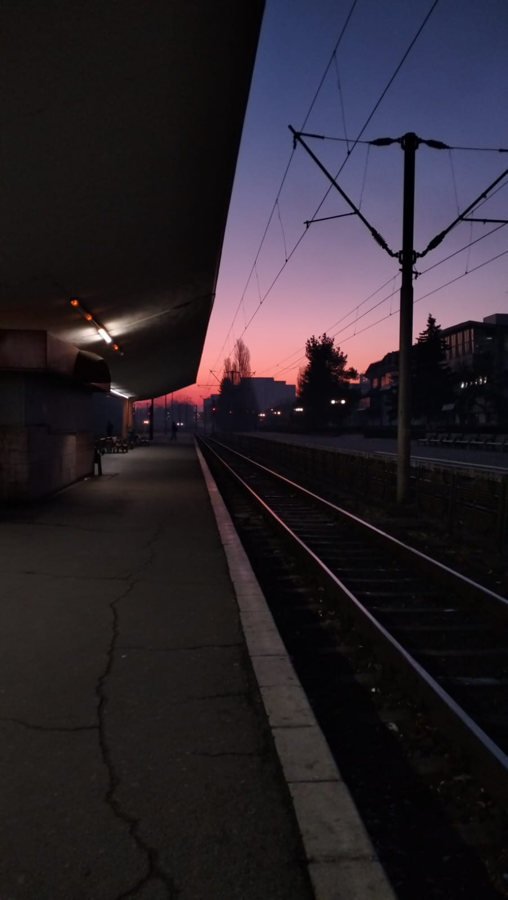

17 februarie 2024
Gara Brașov
💜 Te iubesc pentru ca mi-ai aratat ce inseamna de fapt sa traiesti 💜
“Stabilitatea este un sentiment cald și plăcut. Este visul oricui sa trăiască cu gândul ca orice s-ar întâmplă este în siguranță. Dar luând imaginea întregii
vieți în considerare, ce ai realizat traind în stabilitate?”. Așa arătau gândurile mele când te-am cunoscut. Au apărut întrebări, dorințe și aspiratii. Datorită
ție am început sa explorez lumea. Datorită ție am început sa ies din zona de confort. Momentele și rezultatele nesiguranței au fost cele mai pline de viața. Au
fost momentele in care ma intrebam “Chiar trebuie sa se termine?”. Insa totul a început de la simple călătorii. Călătorii care mi-au dat gustul amar al
nesigurantei, dar cu un aftertaste dulce si placut. Sa nu uiți niciodată asta: ai fost, ești și vei fi mereu motivatia mea.